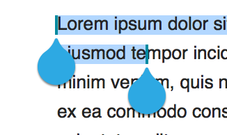
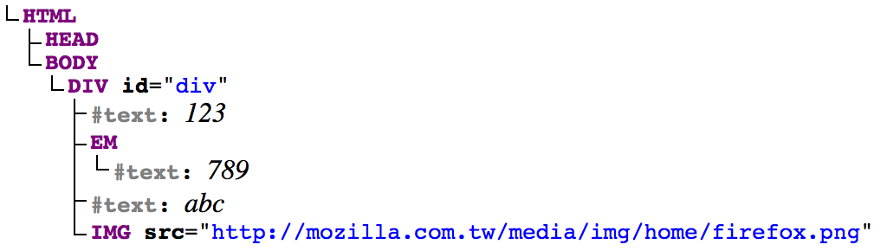

DOM Range and Selection
Ting-Yu Lin
tlin@mozilla.com
May 11, 2015
Why do I need to learn range and selection?

What is a Range object?
- A sequence of content within a node tree.
- Each range has a start and an end which are boundary points.
- A boundary point is a tuple consisting of a node and a non-negative numeric offset.
- 0 <= offset <= node length (number of children)
Learn by an example
- Task: Create a range object from "2" to the image.
- Warm-up questions: Length of
<div>,<em>,123? - Live DOM tree
<div id="div">123<em>789</em>abc <img src="http://mozilla.com.tw/media/img/home/firefox.png"> </div>
123789abc
Back to the task
- Task: Create a range object from "2" to the image.
- start: div's first child, offset 1
- end: div, offset 4 
- Live example in JSFiddle
Range properties
- node =
Range.startContainer - offset =
Range.startOffset - node =
Range.endContainer - offset =
Range.endOffset - node =
Range.commonAncestorContainer - Boolean =
Range.collapsed
What is a Selection object? (Working Draft)
- Each selection is associated with a single range
- Each selection has a direction
- Forward: anchor node = range start; focus node = range end
- Backward: focus node = range start; anchor node = range end
var selObj = window.getSelection(); // document.getSelection() var range = selObj.getRangeAt(0); // Why passing argument 0?
Selection properties
- node =
Selection.anchorNode - offset =
Selection.anchorOffset - node =
Selection.focusNode - offset =
Selection.focusOffset - Boolean =
Selection.isCollapsed - 0 or 1 =
Selection.rangeCount
References
- Range:
- Selection:
- Layout debugger
./mach run -layoutdebug